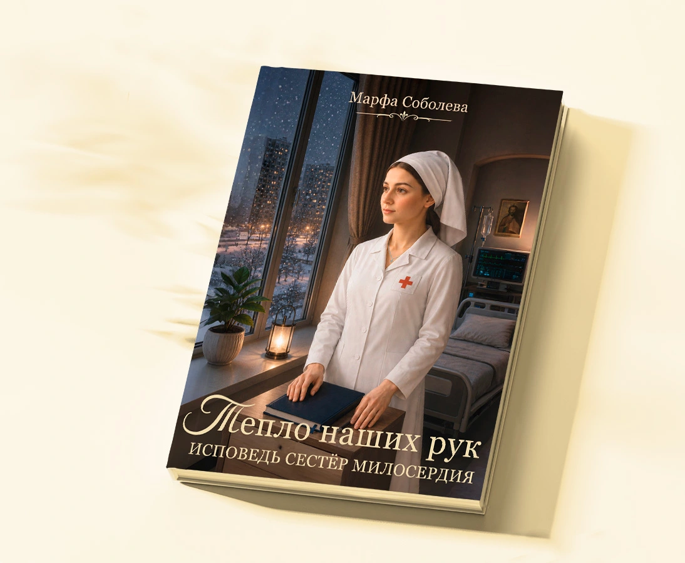
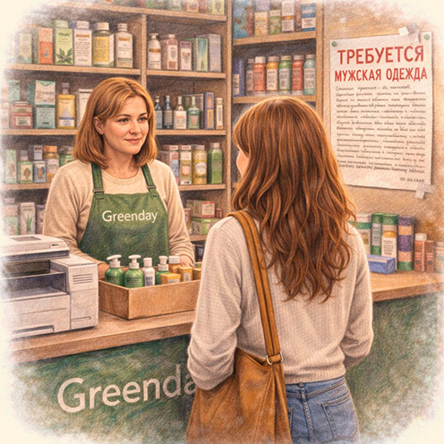
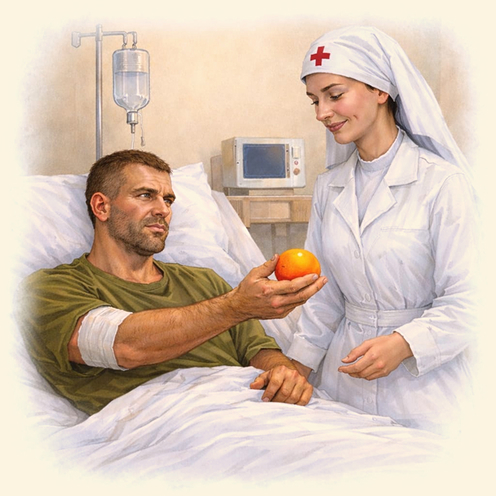
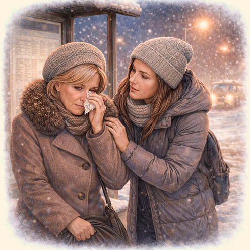
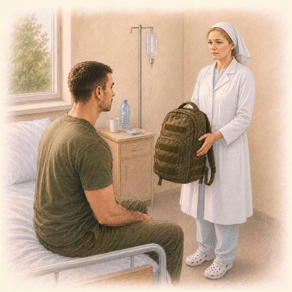
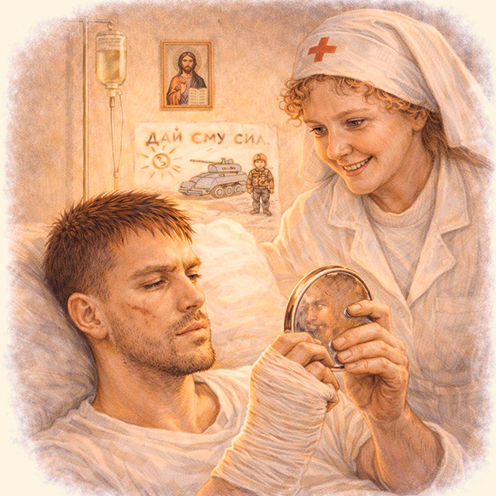
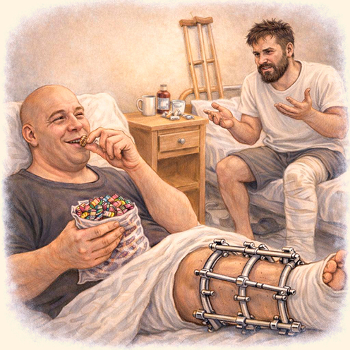
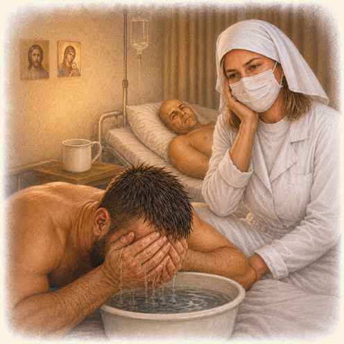

Книга о современных сестрах милосердия, работе в госпитале, ежедневном служении, сострадании, вере, любви и людях, которые меняют мир, оставаясь почти незаметными.
Душевные истории о современном госпитале и его обитателях. О человечности. О достоинстве и уязвимости. О простых делах. И о маленьких чудесах, которые случаются каждый день.

Иногда жизнь меняет не драматическое событие или судьбоносная встреча, а обычное объявление на стене.
Он неделю сидел в «лисьей норе» и всё, что ел — снег. А потом подарил ей апельсин…


Из дневника сестры Алисы: «На остановке». Я не смогла пройти мимо…
Из дневника сестры Виктории: «Слова застряли у меня в горле, пустой рюкзак вдруг стал тяжелым…»

Он целовал ее руки сквозь прутья и прижимал их к щекам…
Он много месяцев не видел своего лица. А потом она принесла ему зеркало…


«А вот я мышам благодарен», — сказал он и все замерли…
«Из дневника сестры Алисы «Неожиданная просьба». Он смотрел на меня из сумрака умоляющими глазами и просил не обезболивающее и не дорогое лекарство…

От автора. Зачем эта книга написана и кому посвящена?
Спор в палате (Вместо предисловия)
⸻
Часть I. Первые шаги
Глава 1. С чего всё начиналось. Как зародилась идея идти в госпиталь: Глава 2. Говорят сестры. «Как ты стала сестрой милосердия/волонтером?
Что сподвигло тебя ею стать?».
Глава 3. Мой первый день. Атмосфера, первое знакомство с госпиталем, эмоции — от страха и растерянности до сострадания и чувства нужности.
Глава 4. «Водичка в тазик»- из дневника сестры Алисы
Глава 5. Как все устроено
Глава 6. «В лифте»- из дневника сестры Алисы.
Глава 7. Из дневника сестры Виктории. Первые впечатления: запахи,
лица, эмоции, мечты.
⸻
Часть II. Госпитальные будни
Глава 8. Из дневника сестры Виктории. Дежурства глазами сестры.
Погружение в рутину и новые вызовы.
Глава 9. Запахи. Гнойка. То, что не видно на фотографиях.
Глава 10. Говорят сестры. «Что стало самым тяжёлым в твоем служении? И наоборот, что придавало сил?»
Глава 11. Истории бойцов. Короткие зарисовки — кто они, откуда, какие судьбы.
Глава 12. Снег ел»- из дневника сестры Алисы.
Глава 13. Боевое братство— и в палате тоже. Как раненые помогают друг
другу.
Глава 14. Из дневника сестры Виктории.
Глава 15. Говорят сестры. «Сталкивалась ли ты с несправедливостью или равнодушием? Расскажи об этом опыте»
Глава 16. Родные и чужие. Мы и родственники бойцов. Глава 17. «На остановке». Из дневника сестры Алисы. ⸻
Часть III.
Тепло наших рук
Глава 18. Мужество быть уязвимым.
Глава 19. Говорят сестры. «Что удивило/удивляло тебя больше всего во время твоего служения?»
Глава 20. Подарки, письма, рисунки. Как это согревало раненых. Примеры, истории.
Глава 21. «Димка». Из дневника сестры Алисы.
Глава 22. Говорят сестры. «Какие необычные просьбы бойцов тебе запомнились?»
Глава 23. Разделяя ношу. Мы и медсестры.
Глава 24. «Зеркало». Из дневника сестры Алисы.
Глава 25. Маленькие радости для больших ребят. Концерты, мастер-классы, настольные игры — жизнь внутри госпиталя.
Глава 26. Говорят сестры. «Моменты неожиданного тепла и человечности».
Глава 27. Из дневника сестры Виктории.
Глава 28 «Лучшее, что с нами случилось...» Сестры милосердия и
волонтеры глазами бойцов.
Глава 29. «Мыши»,— из дневника сестры Алисы. Как мыши однажды спасли бойцов на фронте
Глава 30. Кто сильным был, тот стал еще сильней... Истории о выживании, которые мы услышали от бойцов— о силе духа и чудесах.
⸻
Часть IV. Осмысление
Глава 31 Говорят сестры. «Как ты отвечала на вопрос бойцов «Почему
ты ходишь в госпиталь?»
Глава 32. Химия милосердия. Что происходит с душой и эмоциями на биологическом уровне, когда отдаёшь себя другим.
Глава 33. Свет в тени. Как мы наблюдали переломные моменты «от угасания к жизни»
Глава 34. Из дневника сестры Виктории. Заключение. Личный итог пути.
Глава 35. Говорят сестры. «Как тебя изменила служба в госпитале? Что бы ты хотела, чтобы люди знали о таких, как ты? Какие выводы сделала лично для себя? Что бы хотела сказать читателям?»
Глава 36. Оглядываясь назад. Притяжение добра ⸻
Борьба предстоит еще долгая (Вместо послесловия) Эпилог
Меня часто спрашивают, почему я решила написать эту книгу?
Потому что я ушла из госпиталя, но он не ушел из меня.
На курсах по писательскому мастерству и продвижению книг часто повторяют один и тот же совет:
«Развивайте личный бренд».
«Рассказывайте больше о себе».
«Людям интересен автор».
Наверное, это правильно.
Но каждый раз я ловлю себя на мысли, что мне это делать совсем не хочется.
Ведь когда я пришла в госпиталь, я думала, что попаду в больницу.
А попала в мир удивительных людей.
Бойцов, которые после тяжёлых ранений заново учились ходить.
Сестёр милосердия, которые после своей основной работы ехали в госпиталь.
Врачей.
Волонтёров.
Швей.
Парикмахеров, приезжавших стричь бойцов.
Бабушек, которые по вечерам вязали носки.
Детей, рисовавших письма незнакомым солдатам.
Мне никогда не были интересны герои светских сплетен. Не хочется знать, кто с кем поссорился, кто оказался в центре очередного скандала.
Гораздо интереснее люди, которые каждый день делают этот мир немного теплее и светлее — и редко попадают в новости.
Наверное, поэтому появилась эта книга.
Мне захотелось, чтобы о них тоже узнали.
Чтобы ими восхищались не только те, кому посчастливилось встретить их в госпитале.
чловыл